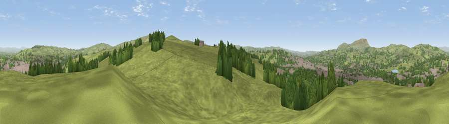

Viewpoint near Colne
#13222 in England · top 22% of its area beats it · near ColneWhere it is
The exact computed spot (SD 88425 38425). Click the marker for map links.
The view, rendered

A 360° render of this exact spot computed from the terrain model, tree cover and land cover — summer colours, afternoon light, calibrated against photographs of famous viewpoints. Real trees, hedges and buildings will differ in detail.
The panorama
Grey silhouette: terrain skyline in each direction (720 bearings, Earth curvature and refraction included). Dashed green: skyline with trees (+15 m) and buildings (+8 m) as obstacles. Blue strip: how far the ground is visible on each bearing.
Where the view opens
Wedge length = distance to the farthest visible ground on that bearing (vegetation-aware). Rings at 10, 25 and 50 km.
What fills the view
61% grassland · 22% woodland · 17% built-up
Angular shares of the visible panorama (visual magnitude), not map area. Landscape diversity 0.42 (0–1 Shannon).
Key numbers
More beautiful places nearby
The staircase of upgrades: each row has a higher view potential than everything closer. Driving times are estimates from straight-line distance, calibrated against real road routing — check an actual route before setting out.
| Place | Direction | Drive | Score |
|---|---|---|---|
| Walton's Monument | SE · 1 km | ~4 min | 60.6 |
| Viewpoint near Foulridge | NNE · 5 km | ~10 min | 63.0 |
| Lad Law (Boulsworth Hill) | ESE · 5 km | ~12 min | 71.5 |
| Pendle Hill | WNW · 8 km | ~17 min | 76.5 |
| Viewpoint near Edenfield | SSW · 21 km | ~35 min | 77.5 |
| Darwen Hill | SW · 26 km | ~43 min | 80.7 |
| Viewpoint near Horwich | SW · 34 km | ~52 min | 81.0 |
| White Brow | SW · 34 km | ~52 min | 82.9 |
53.84194, -2.17740 · source: screening · position refined by local search. Computed location — check access rights before visiting.